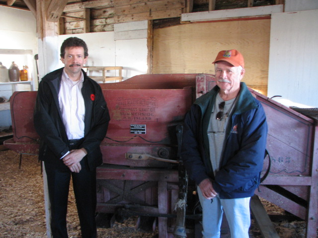
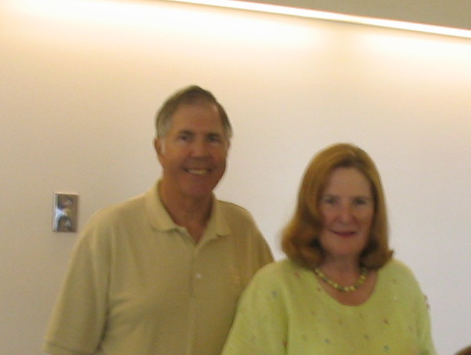

No. 91 , 2008
Hall thresher finds new home

John and Ian MacQuarrie in front of a Hall thresher donated to the Agricultural Museum at Dundas
Hurricane Juan uncovered a Hall thresher on the farm of John MacQuarrie of Hampton, PEI. (See Community Foundation News N0. 2, June 18, 2004) On November 4, 2008, the thresher found a permanent home in the agricultural museum at the Dundas Fairgrounds. To quote Mr. MacQuarrue:
“All
I know is it belonged to my grandfather John Louis MacQuarrie, just
an honest farmer
from Hampton (1904 - 1994). I also know
it was my great grandfather's job to feed the sheaves (W.A
MacQuarrie). They farmed the property originally settled by
another John MacQuarrie in 1804. Not much imagination when it
comes to picking names in our family
Will be hard for me
to keep a dry eye and see that machine on display. I spent all my
summers of my youth with my grandfather and he is the reason I went
into agriculture.
Thanks for keeping the memories alive!
John”
For further information, check our website, www.cfpei.ca or Email me at: don@glendenning.net
Scholarship Established

Rear Admiral Louise C and James E Wilmot
Readers will recall an item in Newsletter #75 describing an interest in improving health care in the Souris area.
The Rear Admiral Louise C and James E Wilmot Scholarship has been established and, in addition the Eastern Kings Health Foundation has established a matching scholarship.
The purpose of the Fund is to improve health care in the Souris area through the provision of financial assistance to nurses in training on condition that, after completing their training and obtaining certification, they accept employment in the Souris Hospital for a period equal to the period covered by the scholarship.
The Wilmots are citizens of the USA and long-time summer residents of Fairfield, Prince Edward Island.
Details and application forms are available on the Foundation website, www.cfpei.ca